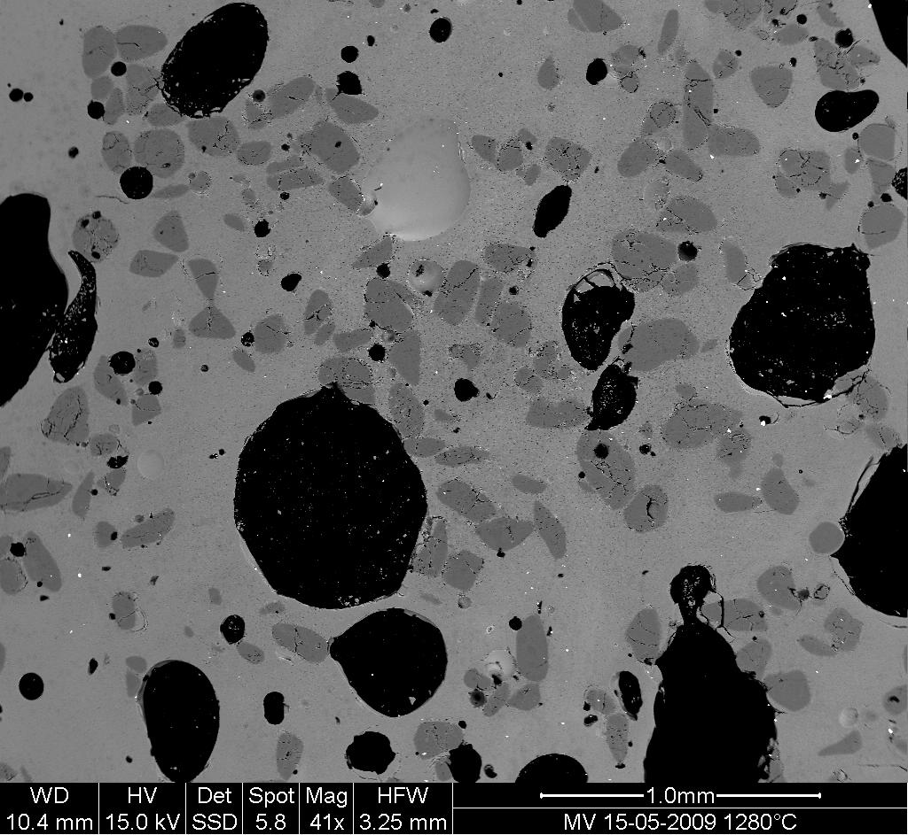
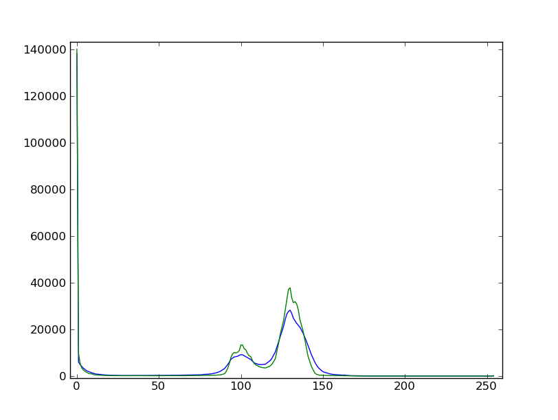
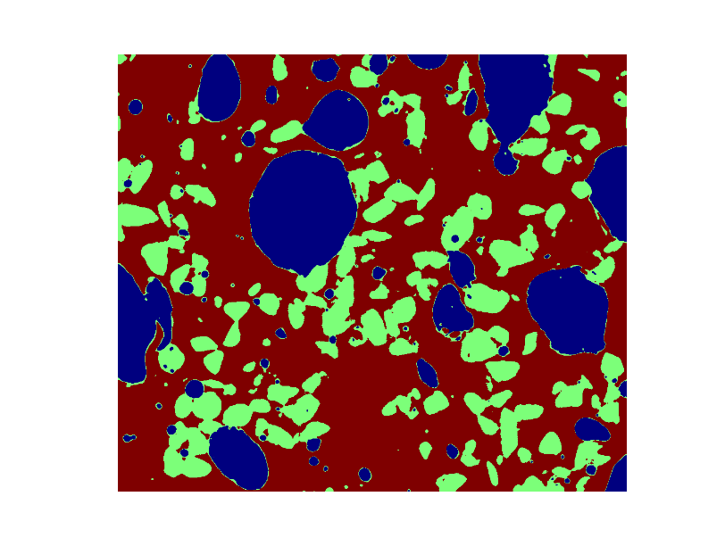
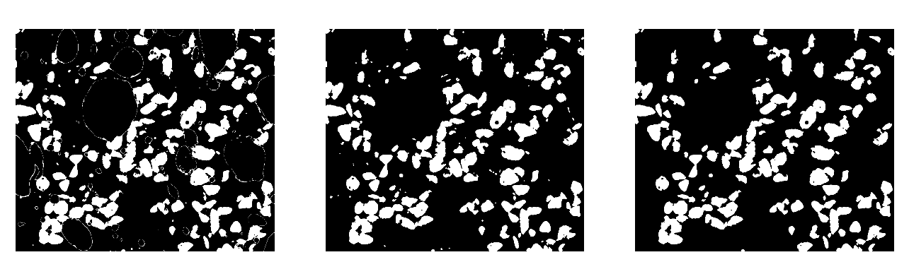

Example of solution for the image processing exercise: unmolten grains in glass#

Open the image file#
Open the image file MV_HFV_012.jpg and display it. Browse through the
keyword arguments in the docstring of imshow to display the image with the
“right” orientation (origin in the bottom left corner, and not the upper left
corner as for standard arrays).
import numpy as np
import matplotlib.pyplot as plt
import scipy as sp
dat = plt.imread('data/MV_HFV_012.jpg')
Crop the image#
to remove the lower panel with measure information.
dat = dat[:-60]
Filter#
Slightly filter the image with a median filter in order to refine its histogram. Check how the histogram changes.
filtdat = sp.ndimage.median_filter(dat, size=(7,7))
hi_dat = np.histogram(dat, bins=np.arange(256))
hi_filtdat = np.histogram(filtdat, bins=np.arange(256))

Determine thresholds#
Using the histogram of the filtered image, determine thresholds that allow to define masks for sand pixels, glass pixels and bubble pixels. Other option (homework): write a function that determines automatically the thresholds from the minima of the histogram.
void = filtdat <= 50
sand = np.logical_and(filtdat > 50, filtdat <= 114)
glass = filtdat > 114
Display#
Display an image in which the three phases are colored with three different colors.
phases = void.astype(int) + 2*glass.astype(int) + 3*sand.astype(int)

Clean#
Use mathematical morphology to clean the different phases.
sand_op = sp.ndimage.binary_opening(sand, iterations=2)
Remove small grains#
Attribute labels to all bubbles and sand grains, and remove from the sand mask
grains that are smaller than 10 pixels. To do so, use sp.ndimage.sum or
np.bincount to compute the grain sizes.
sand_labels, sand_nb = sp.ndimage.label(sand_op)
sand_areas = np.array(sp.ndimage.sum(sand_op, sand_labels, np.arange(sand_labels.max()+1)))
mask = sand_areas > 100
remove_small_sand = mask[sand_labels.ravel()].reshape(sand_labels.shape)

Bubble size#
Compute the mean size of bubbles.
bubbles_labels, bubbles_nb = sp.ndimage.label(void)
bubbles_areas = np.bincount(bubbles_labels.ravel())[1:]
mean_bubble_size = bubbles_areas.mean()
median_bubble_size = np.median(bubbles_areas)
mean_bubble_size, median_bubble_size
(np.float64(1699.875), np.float64(65.0))